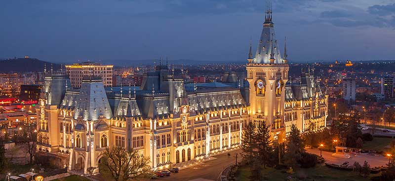

Home Contact Scoala

Romania
Radu was born in 1994 in Romania, Iasi.
Check more about Romania
Iasi Historical Town Check.
Visit charming villages nestled in the shadow of the Carpathians where time seems to stand still, and explore Moldavia’s rural culture through historic monasteries, fortresses, and a folk museum.